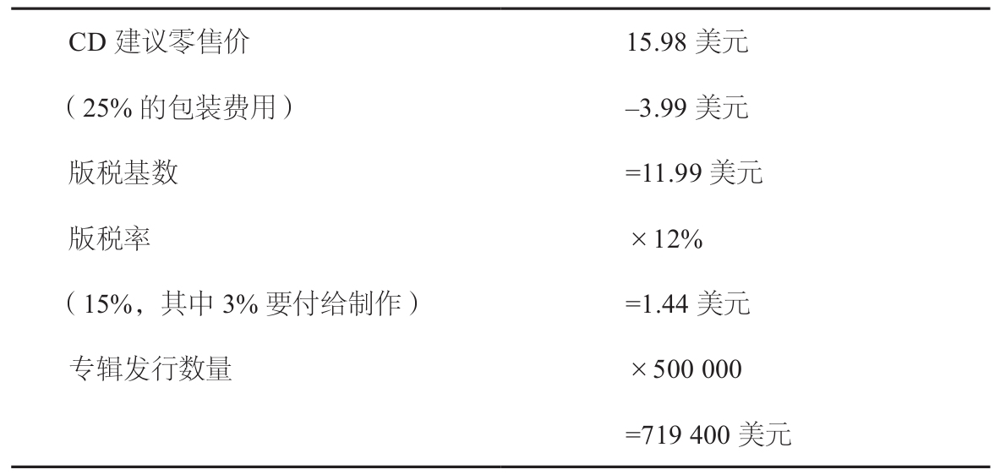
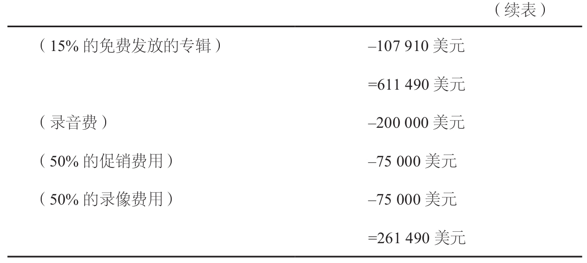

音乐的创新对整个国家都充满了危险。若非国家根本大法有所变动，音乐的形式与风貌是不会改变的。
——柏拉图，《理想国》
在数字时代，查克·D（Chuck D）是一个备受争议的英雄式人物。作为说唱组合Public Enemy的创始人，查克·D出过很多专辑，如《Yo！Bum Rush the Show》和《Fear of aBlack Planet》。这一切似乎都与网络世界的著名开拓者以及网景、雅虎和美国在线毫无关系。但是在1998年，查克·D闯入了网络世界。这名说唱歌手直接将其最近的几首新歌发布到互联网上（www.publicenemy.com）。而在此之前的十几年间，他的歌曲都是通过Def Jam唱片公司发行的。其实，这本来不是什么大不了的事情，只不过是几首歌曲以及有可能吸引一些乐迷的时髦方式而已。但是在音乐界，这却是一个不折不扣的大新闻。因为从严格意义上讲，查克·D的所作所为彻底地抛弃了音乐界所遵循的最为神圣的惯例。虽然只是发行了几首歌，但是，查克·D却向固有的音乐销售模式甚至是占有形式发起了挑战。他声称：“这是结束旧有的统治模式的开端。”
对于查克·D而言，将音乐放到网上是一种利用新技术更正旧有的不公正的方法，这种方法可以使音乐人收到他们应得的影响力和报酬。然而对于唱片业，这无疑是一种异端邪说。几十年来，EMI（百代唱片）以及宝丽金等公司一直遵循着一套传统的、行之有效的规则。这些公司与它们眼中最有人气的音乐人签订长期合约，包办这些音乐人的一切活动，包括专辑的录制、发行以及所有的市场营销和公众宣传。这些音乐人依靠他们的作品赢得了名气，同时也按照预先的约定从收益中获得了分成。然而，唱片公司在占有了其余的收益的同时，还获得了对音乐的合法所有权。也就是说，这份财产被唱片公司所掌握，而音乐人并没有所有权。
查克·D所要挑战的正是这种体系。通过直接将音乐放到自己的网站上的方式，他有效地避开了唱片公司费尽心机所建立起来的规章制度和商业模式。他又重新拥有了自己的音乐，而此前这一所有权却掌握在唱片公司手中。这当然是唱片公司不愿看到的。
如果查克·D的所作所为只是一个个例的话，唱片公司很有可能不予理会。也许他们只是会简单地视其为另类，将其解雇了事，然后忘掉他和他的网站。然而，问题的症结在于：潜在的查克·D无处不在。在计算机世界里，任何一个音乐人都可以将自己的音乐放到网上，任何一个音乐人都可以成立自己的小型唱片公司，而不必理会现有的复杂的规章制度。更为糟糕的是，MP3等数字技术的出现彻底搅乱了原来的唱片界合法体系的基础。从法律的角度上看，唱片公司拥有自己旗下的音乐作品的发行权和复制权，任何人在没有向唱片公司购买版权的情况下，是不能随便发行和演奏这些作品的。但是，如果音乐人只是简单地将其作品放到网站上，该如何处理呢？接下来，如果一名大学生将这个计算机文件下载到个人电脑上或者用E-mail传给他的朋友们，这种情况又该如何处理？由于这些行为只是在20世纪90年代后期才出现的，相关的法律还是一片空白。也就是说，对于MP3技术以及网上音乐的所有权还没有相应的立法。
这一状态在1999年出现了转折。肖恩·范宁（Shawn Fanning），一名19岁的辍学大学生，加入了查克·D的行列。由于得到了其在波士顿的叔叔的支持，范宁创办了一个革命性的网站——Napster，使数以百万计的用户可以在网上交换他们的歌曲。在其开通后的几个月内，Napster成了一种社会现象，并且对商业造成了极大的威胁。各大院校开始抱怨Napster耗费了大量的网络资源。同时，唱片公司也谴责说他的做法是最严重的盗版行为。正如一位律师所描述的：“这是一种显而易见的盗窃行为。”具有讽刺意味的是，像歌手Prince和摇滚乐队Metallica这样的乐队也加入到了唱片公司的阵营，一同打击这些新的盗版者。同时，预言家们甚至预言整个唱片行业将会消亡。一位观察家写道：“音乐发行方式的改变已经引起了一场革命，使各大唱片公司陷入了恐慌。”查克·D一如既往更为直率地宣称：“我们的想法正是要毁灭整个唱片业。”
一时间，喜悦与混乱并存。计算机音乐似乎真的能够摧毁唱片公司。但是不可避免地又要提出一些老问题：如果音乐人和制造商使用不同的录制和发行标准，网络音乐将要如何发展？如何防止音乐人的作品被盗版者盗取？而且最重要的是，真的有人能在音乐所有权消失的情况下获利吗？2001年，唱片业界和法律专家们开始联合起来着手解决这些问题。然而，它们的进展非常缓慢，建立一种新的更为有序的框架更是困难重重。没有人希望政府出面来管理唱片业，也没有人（除了唱片公司）希望看到唱片公司重新拥有对所有权和版税的控制。但是，也没有歌手愿意让这件事长期停留在混乱状态。他们希望有法可依，希望拥有产权，也希望有人能够出面进行干预。这就是科技前沿的商业本质。
老式的音乐制作方式
对于那些在摇滚乐盛行的年代里成长起来的一代人，他们会很自然地将音乐与反叛精神联系起来。那时，音乐里充斥着性、失检的言行以及各种被禁止的渴望和色欲。虽然时至今日情况仍然如此，但是由五大唱片公司主宰的整个唱片业已经成了一座保守主义的堡垒。正如查克·D所指出的那样，“由于被律师们和会计师们所操纵，唱片业已经变得极度保守、毫无活力”。
但是不管怎么说，整个唱片业长期以来一直都是在几家大公司的操控之中，它们牢牢掌握着全球市场。与白炽灯一样，唱片业也始于托马斯·爱迪生。爱迪生于1877年发明了留声机，而在其后的近10年间，他也是唯一能制造这种留声机的人。这一脆弱的装置能够将歌曲蚀刻在锡纸上，但是它似乎并没有什么商业价值。但是在1887年，亚历山大·格雷厄姆·贝尔（Alexander Graham Bell）设计出了一种更为复杂的机器，并借此创办了美国留声机公司，形成了与爱迪生留声机公司相互竞争的局面。作为回应，爱迪生也更新了他的机器。这两家公司开始在全美地区销售它们的留声机。当时，留声机主要应用于投币点唱机以及各种会讲话的洋娃娃中。然而，在将贝尔的公司逐渐挤出市场之后不久，爱迪生又遇到了哥伦比亚公司和维克多公司的强有力的挑战。在此之前，这两家公司分别是爱迪生公司产品的销售商和唱片的主要制造商。在19世纪末20世纪初，爱迪生、哥伦比亚和维克多成为全球留声机市场上三家最大的厂商。它们掌握着各项关键专利，分别与流行歌手们签订排他性的合约，同时也将留声机推广至千家万户之中。之后，1902年和1909年它们分别在英国和美国决定制定音乐产权的法律保护框架的时候，又取得了关键的胜利。从此以后，任何公司只需向音乐产品的原始版权拥有者支付一定的版税（最初在美国，每次复制的版税只要2美分），就可以将这些音乐录制成为唱片了。也就是说，这些唱片公司既拥有它们所录制的音乐的产权，又拥有对这些音乐进行进一步处理的权利。唱片业的法律框架就此形成。
在其后的40年间，为数不多的几家公司仍然紧紧控制着整个唱片业。由于1929年的经济大萧条，爱迪生的公司被迫退出这一角逐。与此同时，英国的迪卡公司（Decca）迅速崛起，并取代了唱片业三驾马车中爱迪生公司的地位。接着，第二次世界大战的冲击，使Mercury和Capitol这两家迅速发迹的公司开始撼动哥伦比亚和维克多几十年来的霸主地位。他们发掘了弗兰克·辛纳特拉（Frank Sinatra）以及佩吉·李（Peggy Lee）等一批炙手可热的新星，同时还使自动点唱机这一新型装置得以广泛应用。这样一来，就形成了这几家公司共同主宰唱片业的局面。这几家公司与歌手签订排他性合约，在电台节目中大出风头，还推出了密纹唱片、45转唱片等新型唱片。到20世纪50年代中期，仅Capitol、Mercury、维克多和哥伦比亚四家公司的专辑就占据了美国音乐杂志Billboard排行榜的70%，Billboard排行榜正是音乐唱片销售的晴雨表。
然而，在1955年的时候，摇滚乐开始引起公众的极大关注，使唱片公司都为之震惊。起初摇滚乐并没有很大的声势，而只是在爵士乐俱乐部和乡村电台中被一些美国黑人传唱而已。当时，唱片公司只是将这种音乐形式视为一种“种族音乐”而不予接受。但是渐渐地，摇滚乐开始冲破原先的狭小空间，逐渐步入了美国主流音乐之中。随着Billboard杂志将其命名为“节奏布鲁斯”（R&B），越来越多的白人歌手也开始加入了演奏摇滚乐的行列之中。《Bo Diddley》和《Maybelline》等R&B歌曲风靡一时，很多原创的R&B歌曲也被白人歌手录制成唱片，并被越来越多的白人听众所接受。
随着这一态势的发展，发生了两件震惊整个音乐界的大事。第一件是比尔·哈利（Bill Haley）发表了一首名为“整日摇滚”的歌曲。像弗兰克·扎帕（Frank Zappa）所形容的，“这首歌曲很快就成了年轻人的国歌”。另一件事就是埃尔维斯·普雷斯利（Elvis Presley，“猫王”）和他令整个音乐界为之倾倒的欢快的声音。虽然哈利和猫王仍然是通过那几家大公司发行他们的专辑，但是他们的那种与弗兰克·辛纳特拉和帕特·布恩（Pat Boone）的低吟浅唱截然不同的R&B曲风却极大地鼓舞了摇滚乐的发展。公众对于新的音乐形式的需求使那些新兴的唱片公司，尤其是小的R&B唱片公司，获得了与“四大公司”争夺市场的难得机会。到1958年，借着法兹·多米诺（Fats Domino）、穆迪·沃特斯（Muddy Waters）和雷·查尔斯（Ray Charles）等歌手的走红之势，大西洋和Imperial等独立唱片公司占据了Billboard排行榜上76%的份额。
但是，现在回过头来看，这些新兴公司发展的高峰期也只是摇滚乐初的第一次浪潮。具有讽刺意味的是，当摇滚乐和R&B音乐开始在美国的主流音乐中大放异彩时，这些风格专一的公司却越来越难以与那些大公司相抗衡。它们没有足够的财力支付明星们的薪水，也不具备满足全球听众需求的市场能力。同样，它们也不可能同时与数名艺人签约或同时发行数张专辑，因为其中只有很少的一部分会取得成功。因而就出现了如下的局面：尽管它们的音乐作品取得越来越大的成功，很多小公司却不得已合并成为大公司，或者被大公司所并购。比如说，异军突起的华纳兄弟唱片公司于1964年买下了另一家名为Reprise的独立公司。接着，公司又于1967年和之后的几年间分别收购了大西洋、Elektra和Asylum等公司。1979年，最大的影片公司之一联美公司与Capitol公司合并A&M唱片公司，加入了胜利唱片公司（RCA Victor）。随后在1983年，Arista公司和Ariola公司也加入到了不断壮大的RCA公司当中。在整个20世纪80年代，唱片业又落入了少数几大巨头的操控之中，而这些巨头又都是由一些表面上相互独立的小公司联合组建而成的。10年之后，这一领域的格局由于几家非美国公司的出现而发生了一些细微的变化，同时唱片业的市场也延伸到了全球各地。据估计，到1996年，贝塔斯曼音乐集团（BMG）、百代、宝丽金、索尼、环球和华纳“六大公司”占据了全球唱片销量70%~80%的份额，几乎掌控着全世界所有的知名音乐人。
与最初的情况相类似，在世纪更迭之际统治唱片业的这几家唱片公司不但规模巨大，而且形式多变。以华纳唱片公司为例，它本身只是时代华纳娱乐公司的一部分。而后者除了拥有几家唱片公司以外，旗下还有24份杂志、主题公园、图书出版社、电视台和电影院。同样，环球公司也曾是拥有环球影城、DECca和Geffen等唱片公司的MCA公司的一个分公司，而于1995年被一家名叫西格拉姆（Seagrams）的生产酒类产品的公司所收购。BMG公司则隶属于德国最大的传媒集团及出版业巨头贝塔斯曼。类似的情况还有很多。
当然，长期以来，每家公司（以及它们下属的各个小公司）都形成了自己的风格。有的公司专门致力于发展某一流派的歌曲，如古典音乐或说唱音乐。而大多数的公司则是依靠与那些特别受欢迎的流行歌手签订合约。以EMI为例，他们掌握着甲壳虫、海滩男孩及滚石乐队等艺人的作品。而华纳公司则拥有麦当娜、齐柏林飞艇乐队和老鹰乐队等。但是，总的来说，所有公司都是沿着一种相似的经营模式来发展的。它们首先签下一大批有前途的歌手，与这些歌手签订一份相当有约束力的合约，然后将这些歌手推向市场并发行和推广他们的音乐作品。在这种典型的关系之下，歌手（如查克）就会与宝丽金旗下的Def Jam唱片公司签订合约，合约中规定公司拥有他的一张或几张专辑的版权，而公司也将根据专辑的销售情况付给歌手一定的版税。破嘴合唱团、布鲁斯·斯普林斯汀或卢西亚诺·帕瓦罗蒂这类歌手的情况，也基本是类似的：歌手们经过一段时间创作出一些歌曲，接下来公司将拥有这些歌曲的版权，作为回报歌手将获得一定比例的版税。对于唱片公司来说，这是实现股东们所要求的收益底线的唯一途径，也是公司在培养各种年轻的、未经考验的新人的同时获得投资回报的唯一途径。而对于很多歌手来说，这种关系实际是对音乐的一种束缚，是歌手为了获得那些微不足道的收益而对自己的灵魂的束缚。
让我们从版税的角度来看一下这个问题吧。一般情况下，一名中等水平的歌手会从他们专辑的建议零售价中获得14%~16%的收益。如果他们取得了成功，比如说其唱片在美国市场上销售了50万张取得了“金唱片”的业绩的话，歌手将从全部的零售收益中取得大约15%的分成。如果该专辑是一张标准的CD（激光唱片），售价为15.98美元的话，粗略地计算，该歌手将会获得1198500美元的收益。这种情况并不算太坏，尤其当这名歌手还只是一位刚刚推出首张专辑的、年仅16岁的年轻摇滚歌手的时候。但是实际上，这种计算方法并不合理。首先，唱片公司通常会从歌手的版税收入中扣除产品的包装费用（CD约占25%，磁带约占20%），认为包装费用并不应该计入产品的“真实”价值。其次，唱片公司还会扣除那些免费发放的专辑的费用，认为这一部分的费用也不应该属于歌手的版税来源。这很合理，不过这部分促销产品的数量在一张专辑总销量中占的比例竟高达15%。此外，歌手还不得不从自己的收入之中扣除一些必要的开支，其中包括录音费、录像费、设备租用费、路费、制作人的薪水乃至推销员的薪水。事实上，这其中绝大多数的花销都应该从专辑的收益之中扣除，而不应该由歌手来预先支付。
一旦将这些名目繁多的花销考虑进去的话，歌手们的收益情况就将大不相同了。表7.1中列出了这一变化。
表7.1 典型的版税支出细目分类


资料来源：Passman，第114页。
虽然收入减少到了261490美元，这对于一位16岁的新人也还不算太坏，但是这一数字与起初的近120万美元相比却大大降低了。除此以外，在一张专辑的发行初期，为防止专辑的销量突然出现滑坡，通常唱片公司会保留版税中的35%~50%，只付给歌手应得的版税的一部分。而且，唱片公司还保留对母版唱片的所有权以及对其进行复制的权利。[此书分享微信wsyy5437]
由此看来，这一合同体系和核算方式招致大量的非议就不足为奇了。举例来说，由于华纳公司不同意Prince按照自己喜欢的速度来发行他的新专辑，这位著名的歌手兼歌曲创作者干脆将自己的名字改得十分拗口，在自己的脸上写上了“奴隶”的字样，甚至宣称自己将和那份合约同归于尽。这件事发生在1993年，而大约一年前他才签了一份据称价值1亿美元的新合约。Prince说：“华纳公司想让我每隔一年半才发行一张专辑，但事实上我只需花7个月的时间就可以做到。这无法满足我强烈的创作欲望。”在与华纳公司抗争了几个月之后，这名歌手亲自创办了一家名叫NPG的唱片公司来发行他自己的歌曲，并开始尝试CD-ROM（只读光盘）这一新格式。几年之后，在他转入Arista公司之后，这位歌手在自己的歌中唱道：“不停地旋转并不曾使我的世界发生混乱，正是音乐的商业化毁掉了音乐本身。”他的这一举动也得到了其他歌手如查克·D的响应。查克·D唱道：
如果你没能掌握母版唱片，
那么母版唱片就将掌握你。
花费大量美元创作出一首歌，
我们却连一毛钱也得不到。
其实，在很大程度上，歌手和唱片公司之间这种紧张的局面正是它们之间复杂的共生关系导致的必然结果。纵览唱片业的整个发展史，歌手和唱片公司其实是相互紧密依存的：如果没有歌曲，唱片公司就没有东西可卖；而如果没有唱片公司，歌手就没有有效的渠道来与听众进行沟通。这虽然是一种棘手的关系，但同时也是一种必要的关系。二者如果失去了对方，就既无法创作音乐，也不可能赚到钱。然而在这种关系中，权力似乎又不可避免地落到了唱片公司这一边——落到了那些饱受非议、却把握着歌手们通向名誉、财富和大批歌迷的大门的“会计师”手中。而且，由于歌手的数量要远远大于唱片公司的数量，所以歌手们在本质上是受唱片公司支配的。虽然他们可以就合约中的一些条款与唱片公司讨价还价，当然也可以通过与唱片公司谈判来实现自己所期望的声誉，但实际上，他们仍被唱片公司所操纵；只有唱片公司才能与零售商店和电台保持联系，进而与音乐作品的最终消费者，也就是歌迷们保持联系。但是，一种新生事物的诞生改变了这一局面，它就是一种被称作MP3的新技术。
MP3的诞生
与很多数字技术相似，MP3最初只是被看作一种科学家和发明家们发明的深奥的东西而已。自从计算机实用化以来，研究人员就在千方百计地寻找一种能够利用计算机播放和传输音乐的方法——使计算机能够像读取文字和数学符号那样“读取”数字化的音乐。热衷于电子音乐的人们于1983年迈出了第一步，他们设计了一种叫作MIDI的接口。这种接口能像钢琴演奏机那样存储音乐信息，还可以实现电子合成器、电子取样机和专用计算机之间的信息交换。8年后，当个人计算机开始逐渐普及的时候，IBM和微软又在这一标准的基础上开发了一种叫作波形音频文件（WAV）的格式。这种格式可以通过麦克风录制声音，并通过编码将其转为数字信息。到1992年，所有的Windows3.1软件都具备了读取这种声音格式的功能。
虽然已经轻易地进入了大众市场，但是WAV这种声音文件格式却因太过繁琐而难以实用化。一首两分钟长的歌曲就要占据20兆字节的磁盘空间，而要通过普通的调制解调器来下载它，则需要花费两个多小时的时间。其实它的音效也不太好，远远不及传统的CD或磁带的效果。
即使这样，也仍然有一小部分科学家坚信能够利用计算机播放音乐。而且他们相信，如果制造出合适的设备的话，广大用户也会非常乐意去听。莱奥纳尔多·基亚里廖内（Leonardo Chiariglione）就是这些先驱者中的一位。这位彬彬有礼的意大利工程师深深地迷恋于制定各种未来的标准。1987年，他在意大利通信研究中心（CSELT）的电信实验室里工作。当时，基亚里廖内参加了联合图像专家组（JPEG）的会议，这是一个由国际标准化组织（ISO）召集成立的工业团队。与ISO一样，JPEG也是一个由私营企业和政府部门自发组成的组织，以使来自世界各地的专家共同研究一些技术及制定运行标准。虽然以前从未参加过类似的会议，但是，基亚里廖内却一下子就着了迷。在数月之内，他便联系到了JPEG的主席，而且还被准许成立一个由ISO主办的新的组织——动态图像专家组（MPEG），一个专为动态图像的数字编码制定标准的组织。
从表面上看，MPEG只是一个普通的标准化组织。它是依靠ISO和IEC（国际电工委员会）的共同赞助而成立的，其使命就是为科技的某个特定的分支制定标准。这样，动态的图像和声音就可以被编成数字代码了。与其他的ISO或IEC组织一样，MPEG也是由世界各国的标准化部门的代表所组成的，而且其成员也包括很多专家和工程师。然而，正是基亚里廖内使MPEG能够独具特色。对他来说，标准不仅仅是标准，多媒体也不仅仅是一种技术；相反，它们是人类进行交流的核心，是使这个社会依靠整体得以进步或各行其是从而退步的平台。这正如他所描述的：
交流的标准化是整个人类文明的基石。由于认识到了特定的语言表达是与特定的对象、特定的概念甚至是特定的观念休戚相关的事实，人类才得以实现那些集体目标。人类文明之所以能够一代代地不断延续和进步，正是由于在特定的语言表达与特定的书面符号之间存在着一致的映射关系。这使人类能够将前人的知识保留给子孙后代。
虽然并不清楚是否MPEG组织里的每个成员都能够接受基亚里廖内的这一伟大观点，但有一点是显而易见的，那就是大家已经被它高涨的热情和为实现共同目标而平息争端、精诚合作的杰出才能所折服。到1994年为止，MPEG已经由最初的25名成员发展成为一个囊括了150名来自世界各国的标准化部门及相关公司代表的大组织。其中的很多公司还是竞争对手，且各自都拥有自己的一套数字技术。有了如此众多的加盟者，很多业界人士都开始担心由于其规模过于庞大，或者在技术和专利权方面喋喋不休的争论会毁掉MPEG。不过幸好，基亚里廖内和他的洞见最终取得了胜利。MPEG于1994年成功地推出了MPEG-2音频标准，而这一标准是基于一家名叫Fraunhofer Schaltungen的德国公司的技术之上创造出来的。尽管当时并没有多少人了解这一标准，但它却开创了一个MP3的时代。
从技术角度上讲，MP3这一标准的作用是将声音编码成为电子比特，然后，将这些电子比特压缩成易于管理的文件。通过使用这一标准或基于这项标准之上的技术，程序员们可以将音乐、声响，甚至是一些个人的问候语转化成标准的数字格式——一种可以被任何基于MPEG-2格式的机器识别的0和1码流。其实从本质上来说，MP3这种编码是一种经过数学处理的、莫尔斯电码的数字化形式。像莫尔斯电码一样，MP3使人们得以将信息无间断地、完整地从一种格式转化成另一种格式。
事实上，MP3也是对旧有的WAV格式的一大改进。以前，程序员们总是试图精确地保留和再现所有的声音信号，这就意味着文件中将包含大量的数据。与此形成鲜明对比的是，MP3利用一种“听觉掩蔽”的技术来再现人耳对声音信号的感知。通过滤去多余的声音信号，听觉掩蔽技术的压缩率可以达到12%~14%，这就意味着仅用一张CD就可以容纳可播放14个小时的音乐。这一突破使那些心存不满的歌手迅速接受了MP3这种新格式，并准备利用它大显身手。
1994~1996年，MP3渐渐地出现在全世界的音乐当中。这一技术本身并没有过多的宣传，传统的录音工作室也不需要这种技术。但是在其他地方，MP3却赢得了越来越多的支持者。这些支持者中的大多数人，有的对这一新技术的前景充满希望，而另一部分则对唱片公司极度吝啬的做法感到厌恶。举例来说，Public Enemy乐队于1994年发行了一张名为“Muse Sick-N-Hour Mess Age”的CD专辑。在按照原先的方式发行（通过Def Jam唱片公司以及零售商店）的同时，该乐队开始关注正在逐渐兴起的MP3技术，并说道：“我们正讨论决定要改变歌曲的发行方式。”同年，摇滚乐队Aerosmith直接将一首尚未发行的单曲放到了CompuServe网站上。他们宣称，“如果我们的歌迷正沿着这条信息高速公路行驶的话，我们愿意在卡车停车场演出”。一年以后，英国的摇滚乐歌手戴维·鲍威（David Bowie）也加入到他们的行列中，他将自己尚未发行的单曲传到了另外一个网站上。紧随其后的是著名的爱尔兰乐队U2，他们的专辑在匈牙利被盗版后立即就被放到了世界各国的网站上。对于这起盗版事件，U2乐队的经理人马克·马洛特（Marc Marot）谈道：“这给人的感觉就好像是他们（盗版者）把U2乐队从那些凶狠的唱片公司的控制体系中解救出来一样。”为了弥补这一损失，U2不得不加紧准备发行他们的新单曲和新专辑。马洛特意味深长地说：“互联网已经彻底地、永远地改变了我们的生活。”
盗版者的再次出现
只要MP3还只是科学家们的实验品和少数心存不满的歌手的发泄平台，唱片公司就还可以做到对其置之不理。长期以来，音乐传递方式的技术创新总是不断涌现，与之相伴的，也总是有人对各种格式的音乐进行盗版。毕竟，大多数早期的电台都是依靠播放“未经授权”的音乐而建立起来的；而且大多数的流行歌手也经常翻唱或翻录一些歌曲。然而，唱片公司也能够在盗版者的冲击下生存并发展。至少在一段时间内，MP3看起来不会造成什么特别的威胁，它只是一种有效的录制和存储声音的方式，是一种被标准化的格式。但是，MP3渐渐成为主流。
首先使用MP3的大多是大学生，这些大学生在20世纪90年代末期开始成群结队地上网。与大多数同龄人相似，他们对于任何形式的音乐，尤其是那些以前卫、反主流为特征的音乐作品非常感兴趣。同时，他们也具备了高水平的科技知识与技能——毕竟，他们是与个人电脑共同成长起来的一代人。而且，各大学为紧跟时代潮流也都争先恐后地建立起一批高性能的互联网网站。大学生们可以很快地找到音乐，然后开始播放或下载自己所喜爱的曲目，编辑个人专辑，并通过电子邮件将这些歌曲传给朋友们。就像那些“无线电男孩”一样，一些人开始将他们所有的闲暇时间都花费在虚拟的网络上，与那些相互看不到的网友们交流心得和歌曲。一些雄心勃勃的被称为“网虫”的人甚至成立了一些围绕MP3歌曲下载小团体。
随着这些网站和服务的滋生和蔓延，一场改革波及了整个MP3世界。这种昔日的高深技术如今已经演变成了一种简单的方式——连水平并不怎么高的计算机用户都可以找到他们所需的音乐并将其下载到硬盘上。看到了这种潜力，一些企业家建立了正规的MP3网站。在这些网站上，听众只需付很少的费用就可以下载他们所选择的歌曲。以Nordic环球娱乐公司为例，它于1997年4月成立了一家网站。按照网站创始人的说法，这是“一家在网络上销售音乐的唱片店”，是完全合法的、包含有一些早期的、几乎已经被人们淡忘的曲目。Global Music Outlet公司在南非也做了同样的事，并在网站上放置了一些非主流的音乐。另一家叫作X-Radio的新兴小公司则主要在其网站上放置了一个小俱乐部音乐流派的作品，即“高科技舞曲”。在1998年，涌现出了两家大的商业网站——Good Noise和MP3.com。这两家网站都致力于播放和发行更多的主流音乐作品。
然而，真正的行动发生在1997年和1998年，源自大学生们和赞同在网上免费交换音乐的人创办的一些地下网站。起初，大多数的网上音乐就像“网络”本身一样，都是非主流的、独立创作的。将这些音乐传到网上的都是一些名不见经传的乐队，他们只是将网络视为一种新颖的传播音乐的方式，而且他们这样免费提供音乐作品也不会给自身造成多大的经济损失。例如，作为最早期的大型免费音乐网站之一，国际地下音乐档案网站就将其自身风格定义为“一个可容纳2000万人的咖啡屋”，他们通过网站传播非主流音乐作品，并支持那些新兴的、独立创作的乐队。然而，由于他们对网上音乐的极大关注，这些网站很快便从地下状态转入正轨。学生们将自己喜爱的流行歌曲复制到自己的硬盘上，唱片界的业内人士直接通过网络来秘密“发行”新歌。而且那些远在万里之外的专门传播盗版歌曲的网站上也出现了麦当娜、布鲁斯·斯普林斯汀（Bruce Springsteen）等歌星的CD品质的作品。据估计，截至1998年，网络上的非法音乐网站已经扩展到了2.6万家，共提供了约20万首歌曲。仅以Nirvana（涅）乐队为例，总计有3462家网站提供了这个乐队的流行摇滚乐作品。虽然这一切正符合基亚里廖内的理论观点，但同时也连带产生了这样一种现象：公众所需要的这些出现在网络空间里的音乐作品，实际上很多都是来自唱片公司的。
对于学生这个MP3的最大的用户群来说，所有的这些行为都是振奋人心而且毫无危害的。实际上他们都在做些什么呢？他们只是下载了一些无形的声音比特，然后播放或者传播自己所钟爱的音乐作品而已。一位已经在自己的硬盘上下载了数百首歌曲的大二学生为自己辩解说：“有时我也会感到难过，因为我知道自己给那些唱片公司添乱了。虽然我知道这严格来说是一种侵权，但是每个人都可以说自己复制这些歌曲只是作备份之用而已。”而另一位网迷则坦白道出了自己的心声：“这或许是非法的，但毕竟是免费的。”然而，对于唱片公司来说，这却是一种简单的、纯粹的盗窃行为，显然是在一层不合适的、打着个人娱乐旗号的外衣掩盖之下的数字化盗版行为。一位经理抱怨道，“随便找一个13岁的孩子，他只需简单地按一下按键就可以为全世界几百万人提供音乐。我们谈到的这种情况是一种全新的盗版行为。”鉴于音乐网站的不断壮大，唱片公司开始予以还击，通过华盛顿的美国唱片业协会（RIAA）这个唱片业的最主要的行业协会展开行动。在一间封闭的屋子里，一些调查人员开始查询那些盗版者，通过在各大学的服务器以及各音乐网站上快速浏览，查找出那些被盗版的唱片。事实上这并不难找。在首次的历时一年半的调查中，RIAA查出数千首已经申请了版权的歌曲在各网站间被免费传播，并向350家“盗版”网站发出了正式的警告。RIAA还没收了23858张未经授权的CD-R（刻录）光盘，并以违反版权法为由对其中盗版行为最严重的三家在线音乐网站提出诉讼。
这三家被告并非商业机构。它们免费提供歌曲；同时，作为免费下载的交换条件，也要求用户按照比例上传一定数量的歌曲。因此，从法律的角度上来讲，很难给它们的身份做一个准确的定位，因为实际上并没有一家网站利用其所提供的下载歌曲业务来实现商业盈利。然而，RIAA并没有改变其原则：版权是一种财产，因而即使在没有实现商业赢利的情况下，忽视版权也属于盗窃行为。RIAA主席兼首席运营官希拉里·罗森（Hilary Rosen）指出：“我们需要有一个判决来确保版权所有者的权益。”按照RIAA提供的数据，上述的一家网站每月的用户访问量竟有2.9万之多。
最终，唱片业在法庭上赢得了胜利。这三起诉讼中的网站运营者，都要向RIAA支付10万美元的损失赔偿。接下来，为了使RIAA放弃这笔罚款，几名被告不得不向其承诺今后将不会再出现这种非法举动。就其结果来看，这是一个属于唱片公司的胜利，因为法庭判定网络运营者的行为事实上属于非法复制。然而，这也只是一个短暂的胜利，对这一判决结果的公开指责充斥了整个网络，很多人认为这不是一个靠强制手段就能解决的问题。因为飞速发展的数字压缩技术和越来越多的音乐网站到底使事态变得更糟还是更好，归根到底是见仁见智的。毕竟音乐文件本身变得更容易下载了，而且以Nullsoft公司的Winamp和Real Network公司的Real Jukebox为代表的新一代的播放器使传统的立体声音响系统得以再现，不同的只是这些新的播放器更易于操作，而且其播放的是不间断的声音码流。到了1998年，任何人只要拥有一张CD、一个光驱和一台电脑，就足以在网上播放有CD音效的音乐了。
因此，当唱片公司还沉浸在它们在法律上取得的胜利之中时，很多歌手则将这些法律问题抛之脑后，争先恐后地通过网络直接去面对他们的歌迷。很多新兴的唱片公司如Rykodisc、Sub Pop Records和Parasol Music等也积极地迎合MP3这一格式，并开始以MP3的形式发行新歌。到1998年3月为止，在线音乐零售商Music Boulevard已经以每首99美分的价格售出了上述几家公司的4000多首歌曲。尽管这些钱全部加起来也没有多少，（Music Boulevard的销售额只有3960美元），但是对唱片公司的威胁是显而易见的。
但是，对唱片公司的更大的打击则来自于Napster，它是一个名叫肖恩·范宁的大学一年级新生于1999年所创办的网站。与查克·D和基亚里廖内一样，在很多方面范宁是一位备受争议的先驱式的人物。范宁出生于马萨诸塞州布罗克顿小镇上的一个工人家庭，妈妈是一位单身母亲。他的童年生活非常艰辛，学习成绩也不是很好。他于1998年考上了东北大学，并主攻计算机科学专业。但是他把大部分的时间都花在了位于学校附近的叔叔的办公室里。他总是喜欢在那里摆弄计算机，并梦想着建立一个存放MP3文件的缓存。后来，在尝试找寻一种更为有效的查找和下载音乐的方法的过程中，范宁无意中发现了一种后来被称为“对等网络”的技术。用户在使用这种技术进行复制和交换文件的过程中，没有必要知道对方的存在。在大多数旧有的文件交互模型中，一位用户只能将自己的一首歌曲（如瑞奇·马丁的《让爱继续》）直接传给她的六位好友。与此形成鲜明对照的是，在范宁的系统中，一旦这位用户已经登录到中心网站上，那么任何登录到该网站上的其他人就都自动获得了使用她的计算机上存放的任何MP3文件的使用权限。当然，这就意味着《让爱继续》这首歌曲的潜在下载次数是无限的，因为任何瑞奇·马丁的歌迷都可以轻而易举地从另一位也同时在线的歌迷那里复制到这首歌曲。
在范宁看来，这项被他自己称作Napster的技术的目的只是扩展那些已经存在于网络上的音乐的交流范围。这种技术可以使他和他的好朋友们更为有效地分享自己拥有的歌曲。他回忆说：“我并没有意识到这对于我们来说是一种商机，我这样做仅仅是因为我喜欢这项技术。”然而，对于范宁的叔叔约翰这位在线游戏网站的经营者来说，Napster技术却具有巨大的商业前景。而站在唱片公司的角度看，这一切简直就是地狱。
在获得了叔叔的赞同后，肖恩·范宁于1999年1月正式办理了退学手续。随后在6月1日，他创办了Napster网站。没过几天，这个网站就迎来了三四千名“顾客”。而他的叔叔约翰则开始积极地筹集资金，频频与硅谷里最有名望的风险投资家们会面，并吹嘘Napster网站具有革命性的发展潜力。他说：“我们从一开始便知道Napster网站的前途不可限量。”显然，大学生们非常赞同这一观点并给予了大力支持。在它开通的最初几个月内，Napster网站就席卷了全美的各大院校，甚至消耗了某些大学的全部带宽容量的30%。此外，由于范宁的技术使用起来非常简单，使Napster网站的风头盖过了其他所有的MP3技术而成为音乐方面最主要的技术，而且其使用者涵盖了从正在查找古典音乐的市郊牙医到准备欣赏德国民谣的大学教授的各类人群。截至2000年秋天，Napster网站宣称已经拥有了超过3800万用户。
当然了，这一切对于唱片公司而言简直就是一场噩梦。这绝不仅仅因为该技术形成了一种新形式的威胁——毕竟在活页乐谱的诞生之日就出现了盗版现象，而是因为这种技术使很多人无形中变成了盗版者：这些人并不想偷取什么，而且他们也不把Napster技术与盗窃行为视为等同。换句话说，范宁的技术重新定义了关于音乐的所有权。毕竟在现有的法律之下，消费者有权与朋友们分享自己的音乐；这种行为在美国人眼里是一种资源的“合理的使用”，其性质与到图书馆去借书没什么两样。仅就Napster网站的做法或是范宁与其支持者的言论来看，他们的目的只是将这些可以合理使用的资源拓展到更多的人群中去，而且其性质也是非商业性的。所以，这究竟是一种蓄意破坏版权的行为，还是仅仅是恰巧违背了版权的初衷呢？与处在科技前沿的许多其他问题一样，其答案也取决于不同人的不同看法。那些旧有的规则在这里并不适用。
然而，在这种形势变化不定的情况下，局面似乎对Napster网站以及效仿其技术的其他网站（如Gnutella、FreeNet和Napigator）更为有利。因为如果唱片公司不能从根本上阻止这类服务的话，其市场将很快被那些提供免费音乐的网站所取代，而“拥有”这些免费音乐的消费者们并没有意识到付费的必要性。而且，如果音乐真的可以免费收听，那么还有谁能够从中赚钱呢？因而，在即将迈向21世纪之际，预言家们把Napster网站描绘成了唱片业的死神：科技的冲击最终暴露出了唱片公司的愚蠢并昭示着其消亡。一位观察家这样写道：“企业联盟已经不再有用。而且，几大唱片公司的倒闭根本就不值得同情。”
唱片公司的回击
现在回想起来，唱片公司最初对MP3和Napster网站的那种态度就不难理解了。可以肯定，它们的行动是极其缓慢的。唱片公司非常傲87们慢、固执，而且害怕接触任何可能威胁到它们所拥有的舒适地位的东西。但是，它们最终还是采取了行动，向那些新的盗版者们提出了挑战。它们试图通过各种方式把旧的规则强加在目前这个它们不得不面对的新形势上。
在开始阶段，各唱片公司纷纷集结力量，团结在RIAA之下。它们列出了一长串诉讼名单，并把范围延伸到那些可能利用MP3技术对它们造成威胁的公司。它们还断然拒绝承认科技已经使版权的体系结构和盗版的定义发生了改变。比如说，1998年年末，RIAA对一家创始于加利福尼亚的钻石多媒体系统公司提出诉讼。该公司计划推出一种名叫Rio的掌上电器。与索尼公司的著名产品Walkman（随身听）一样，Rio外表精美，功能先进，而且是一种便携的、可以播放接近CD音效的MP3文件的装置。至少从它蕴含的潜力来看，Rio掌上电脑是一项很伟大的技术。假如它能以一种全新的格式模拟出Walkman的性能，它将能够把MP3径直打入主流音乐市场，并且顺带创造出一个全新的电子产品分支。
而对于唱片公司来说，Rio掌上电脑是令人无法忍受的。如果MP3无须再在私下进行交易，从本质上讲，免费使用音乐这一观点就会变得合法化。唱片公司担心一旦将Rio摆上了货架，它们将会血本无归：MP3将会充斥学生宿舍和各个音乐网站，并进一步影响到音乐的发展方向。正如RIAA的律师哈德里安·卡茨（Hadrian Katz）所描述的那样：“MP3的市场已经从我们这些整天坐在计算机前面的人，扩展到了几乎所有的人，而这必将会使人们对相关产品的需求发生质的变化。”宝丽金公司新媒体技术部的副总裁吉姆·麦克德莫特（Jim McDermott）则进一步坦言道：“Rio，就像幻觉用品商店（出售五光十色的招贴画、念珠、香炷、吸毒用具等）出售的水烟枪一样，被标有‘烟草专用’，但他们明明知道买它的人会用来做什么。”
因此，RIAA开始对Rio进行正面进攻，控告该公司的行为“鼓励”和“推动”了非法复制版权所有的音乐作品。可是这一次，RIAA的观点却并没有博得多少人的同情。与上一次审判结果完全相反，法官奥德丽·科林斯（Audrey Collins）驳回了RIAA关于对钻石多媒体公司实施禁令的请求。理由如下：首先，Rio不具备输出功能（也就是说人们无法利用它进行复制），它并没有推动非法复制；其次，“由于Rio具有录制合法数字音乐的能力，对其实施禁令将会使公众失去一种非常有益的工具”。这一判决结果使钻石公司得以加紧推出他们的产品计划，而RIAA则在一旁目瞪口呆。
其结果可想而知，预言家们纷纷以钻石公司所取得的胜利作为论据，预言新经济中的权力更替已经迫在眉睫。钻石公司市场营销部的副总裁肯·沃特（Ken Wirt）惊呼道：“这是一场广大消费者以及歌手们所取得的胜利。如果这些大唱片公司能够顺应潮流而不是试图螳臂当车的话，他们本来还是可以做得更好的。”就连代表保守派观点的杂志《商业周刊》，也将RIAA的行为斥为“勒德分子式的愚蠢行为”，并嘲笑说，“任何起诉也无法将数字精灵塞回到瓶中去”。而另外一些人的评论可能令唱片公司更无法接受，“RIAA没能取得胜利一事非常糟糕……RIAA并非仅仅是没能获胜——它们实际是在拒绝取得胜利，因为它们所做的决定实在是太愚蠢了”。
但是，在接下来的较量中，唱片公司却开始略微占了上风。它们把精力集中到了利用网络音乐技术来开发自己的产品上。1998~1999年，唱片公司将努力的方向从法庭又转回到了市场之上。它们向网络注入风险资金，并小心翼翼地试验自己通过网络来发行音乐作品的方式。早在1998年年初，宝丽金、索尼及华纳等公司就纷纷建立了类似的零售网站，邀请顾客上网试听一些新歌的片段并在线订购CD。但是，这些网站的功能并不十分完善：用户不能直接下载歌曲，而且也买不到那些早已在零售店里销声匿迹的音乐。但无论如何，这至少是一个开端，而且事实上默认了网络已经不仅仅是那些盗版者的肮脏巢穴了。到了1998年4月，大西洋唱片公司（时代华纳的附属公司）又悄悄地向前迈出了一步，允许那些购买了多莉·艾莫丝（Tori Amos）新CD专辑的消费者从该歌手的网站上额外下载一首歌曲。其他公司也纷纷效仿其做法：索尼允许歌迷从该公司的网站上下载32首新近专辑中的片段；百代也以一种叫作Liquid Audio的可靠的文件下载格式向歌迷提供了大多数的音乐曲目。
对于忠实的MP3迷来说，这些试验性的做法只是证明了唱片公司仍未了解关于音乐的新规则。一位权威人士评论道，它们“已经把头探出了沙堆，而脚却还埋在水泥里”。为了不致重蹈当初对于摇滚乐和R&B音乐时的覆辙，唱片公司摆出了前所未有的认真态度。这一次，它们既没有否认业已摆在面前的这种新格局，也没与那些新兴的网站展开竞争，而是简单地利用自身的雄厚财力来买断竞争。例如，时代华纳公司和索尼公司各自购买了CDnow这一重要的在线音乐零售商37%的股份；百代购入了Music Maker50%的股份，而后者是一家可以为用户定制音乐曲目的网站；BMG公司和环球公司则建立了自己的在线销售网站Get Music。
事情发展至此还算顺利。到1999年，唱片公司已经开始在网上销售其产品，也承认了这种新的传播方式。它们没有与那些身处数字技术前沿的人物或网站发生冲突，而是坦然地去面对那些由高科技引发的盗版问题以及由于现有的版权制度被践踏而给他们带来的压力。由于Napster网站的不断扩展，唱片公司清楚地认识到它们必须进一步有所行动。它们不得不重新建立一套网络空间的版权体系，采取科技的和法律的手段来为盗版行为定性并阻止盗版者的活动。但是很显然，要完成这些任务是非常困难的。因此唱片公司逐渐意识到，它们可以采用的唯一办法就是展开合作——不仅要在唱片公司间展开合作，还要与那些身处数字技术前沿的所有与版权问题休戚相关的角色通力合作。
通力合作
1999年2月，美国洛杉矶市召开了一场非常奇怪的会议。会议的目的是使各合作者之间能够更为团结。当然，所有的唱片公司都参加了，因为这毕竟是属于它们自己的会议。但具有讽刺意味的是，与会者名单上也同时出现了钻石多媒体公司（Rio的制造商）、Real Networks公司（互联网上“jukebox”软件的主要提供者）以及那位极富传奇色彩的基亚里廖内。这次会议为“数字音乐版权保护组织”（SDMI）拉开了序幕，是唱片公司希望利用拉拢分化的手段来对付网络音乐所做出的重大举措。
从表面看来，SDMI简直与原先的MPEG组织一样糟糕。二者都由技术专家和业界代表混合组成，其漫长的议程上也都写满了大量复杂的细节问题。基亚里廖内再一次当选为主席，并主持召开了一系列无休止的会议。与在MPEG时一样，SDMI也将基亚里廖内先前的观点奉为主题，即制定一系列共同的标准，并推动通信技术的进步。然而，透过这层表面现象就会发现，SDMI实际上充当了一个唱片公司未来希望的角色。它们不再仅仅为制定标准而制定标准，其工作重心也不再放在推动科技进步之上。实际上，SDMI是在试图利用科技和标准来重塑那些被MPEG-2所威胁的规则。SDMI的真正目的是对抗MP3技术：各唱片公司联合起来以期创造出一项全新的网络音乐技术，而且这一新技术不应违背旧有的传播体系以及版权制度。唱片公司的这一做法得到了很多人的支持。
虽然并不清楚是谁策划出了SDMI这一概念，但是产生这一想法的原因却是非常简单的。到1999年的时候，唱片公司意识到在与MP3的对抗中已经落入了下风，尤其失败的是它们未能阻止那些未经授权的非法下载行为的蔓延。那些想要听歌的人可以非常容易地接触到网上的相关内容，也热衷于利用Real Networks公司的Real Jukebox或Rio等装置来播放和传播他们所找到的歌曲。如果这一趋势延续下去的话，那么查克·D和其他那些预言家们所做的预言将会变为现实。到那时，唱片公司将会纷纷倒闭，而歌手们的情况则稍微好一些，因为他们可以通过其他途径来发表音乐作品。但关键问题是，查克·D的做法到1999年的时候也开始行不通了。每当一名歌迷在网上免费下载歌曲时，他的这种做法不仅使唱片公司一分钱也挣不着，同时也使查克·D、市场商人以及那些促销者们的利益大大受损。甚至于像EMusic.com（其前身为GoodNoise）这样的商业网站也无法幸免，因为这些网站毕竟是在销售歌曲而不是免费提供歌曲。在最初的兴奋阶段，这场MP3游戏中的参与者们纷纷把这种对惯例准则和版权制度的摈弃视为享受自由的先决条件。但是，随着游戏的不断发展，他们很快就看到了混乱的另一面——既不会受到控制，也无钱可赚。因而，他们只得静静地、不情愿地去接受那份由唱片公司所制定的议程。
该议程的部分内容就是要建立一个正式的、合法的版权制度。早在1997年，几大唱片公司就开始极力鼓吹《反电子盗窃法》。该法案明确指出，在网络空间中，对版权所有的作品（包括电子唱片）进行复制或是传播属于非法行为。1999年，它们又联手推出了三条新的法规：第一条是《新千年美国数字版权法案》，事实上将版权拥有者的权利扩展到了网络空间中；第二条是《欧洲版权指令》，该指令是上述权利在欧盟范围内的扩展；而第三条法规则是在世界知识产权组织（WIPO）的协助下，使全球所有的唱片公司获得该种权利。它们甚至还掀起了一股提请诉讼的旋风，起诉对象包括MP3.com、Scour（一种能够查找各网站上存放的音乐或电影的网络技术）以及最为引人注目的Napster网站。起初，这些行动的主要推动者还只是RIAA以及唱片公司。但是，当看到自己也可以从中获得版权时，歌手们也加入到了这一不断壮大的行列当中。这些歌手宣称他们的这种做法既不是为了歌曲也不是为了钱，而是为了版权——因为即使在网络空间中，版权也应该受到法律的保护。
议程的另一部分涉及一些盛行于唱片业内部的非正式标准，而从很多方面来看该部分内容也是更为重要的一部分。在MP3引起波动的开始阶段，很多歌手就对其态度不一。他们有人对其热烈响应，有人则毫无兴趣；有人根本就对其视而不见，而有人则像查克·D及其拥护者那样，认为MP3技术将会把他们引领到一个更为美好的未来。人们推断，如果歌手戴维·鲍威也将自己的歌曲传到网上去，查克·D再对其拍手叫好，那么事情会变得多么糟糕呢？但是，随着在线音乐网站的发展，同样还是这批歌手却看到了利用数字技术进行发售的局限性，以及由此可能给他们的演艺生涯造成的负面影响。诚然，对于那些不太知名的乐队如Slug Oven来说，网络为他们提供了一个空前的良机。他们可以借此来获得更多的听众，甚至还可以借机提高乐队唱片的销量。然而对于鲍威以及斯普林斯汀这样的知名歌手来说，免费下载只会给他们唱片的合法销售带来打击。因此，这些知名艺人中的许多人开始直接声讨网络音乐，至少也是在声讨那些未经授权就对歌曲进行复制和传播的行为。1998年，歌手Prince的态度发生了一个180度的大转弯，声称要控告那些非法传播其歌曲的歌迷网站。而仅仅在几个月前，他还宣称将只通过网络来发售其音乐作品。此后，英国的著名乐队Oasis（绿洲）也于1999年对提供网络音乐的歌迷发出要进行控告的威胁。而金属乐队（Metallica）则将此举提到了一个新的高度——于2000年控告了Napster。在乐队鼓手拉尔斯·乌尔里希的带领下，金属乐队向法院递交了对Napster网站的控告书，理由是该网站向317377名用户提供他们乐队的歌曲，侵犯了该乐队的版权。就连那些没什么名气的歌手也开始埋怨，认为这种被吹捧得天花乱坠的网络发售方式并不实用。一位将自己的歌曲传到MP3.com上的歌手抱怨道：“我在网上一共只售出了一张CD，而我认为这种情况非常普遍。”事实上，在1999年的8月，MP3.com一共售出了26700位歌手的15600张CD——也就是说一位歌手每个月只能卖出大约半张CD，且仅能赚到3美元。这一结果使美国音乐人联合会的一位代表抱怨道：“造成这一结果的关键在于这些网站在发售唱片的同时，并没有考虑到歌手们的利益。我们将对此予以密切关注。”
与此同时，一些类似的商业因素也将EMusic.com和Real Networks这样的新兴音乐公司进一步推向了唱片公司的阵营。一方面，网络发售的方式使这些公司看到了自身存在的意义：EMusic.com成长为网上音乐发售商中最出色的一员，而RealNetworks公司也依靠能使用户真正在线收听音乐这一强大技术而逐渐发展起来。另一方面，不断增多的免费音乐和缺乏相应的网络版权也使这类公司可获得的潜在收益大大减少。只要版权问题没有明确，那么这些公司要想打开目前由各唱片公司所控制的这片广阔的市场就仍然会十分困难，甚至连那些由它们自己传到网上的新歌也无法控制。在电子商务的初期阶段，EMusic.com和Real Networks这样的新兴公司还在开创属于自己的天地，而没有精力过多地关心如何获取更多的利润等问题。但是，随着网络的不断发展，昔日的这些新兴公司已经发展成为颇具规模的巨头。此时，版权及相应制度的不足就显得尤为突出了。为了解决这种问题，上述的很多“新兴”公司开始向那些老的唱片公司靠拢，以“消除这种无序状态”，并成为“合法化网络市场”潮流中的先锋，一位Real Networks公司的管理人员这样解释道。
在唱片公司的奇怪的同盟圈里，最后一个角色就是消费电子产品公司。以三星、日立和钻石多媒体为代表，这些公司生产一些与音乐相关的电子设备。对于建立一套统一的标准，它们甚至比那些专门的媒体公司还要感兴趣。因为这样的话，它们就可以在这套标准的基础上开发出所有用户及音乐发售商都可以使用的公共平台。当然，从某种意义上来讲，MP3已经算是这种平台了。它既是MPEG组织的官方标准，同时也是网络音乐一族的非官方标准。然而，由于唱片公司并不是很欣赏MP3，而且还担心它被传播得过于广泛，因此它们拒绝将自己的曲目转化成MP3格式。而它们这种做法则直接影响了市场上MP3相关硬件产品的销量。诚然，有一小部分中学生和大学生，他们欣赏像Slug Oven这类不太知名的乐队；然而，他们并不是市场的主体，也不代表收听音乐的主流人群。这就意味着如果任何一家消费电子产品公司大量投资MP3设备市场的话，都将会担负着极大的风险，他们尤其担心自己所选择的这项标准最终会被其他标准所取代。这与当初的录像机市场上所面临的情况非常相似。由于当时电影公司发行的电影没有采用统一的视频格式，引发了一场VHS与Betamax两种制式之间的争斗。而所有选择了Betamax这一最终被淘汰的制式的公司都遭受了沉重的打击。没有人希望这种情况再次发生。最好的保护方法就是建立一种公共的标准和平台，以使唱片公司不再有所顾虑，并说服其将主要的曲目全部进行转化，从而保证唱片业的整体繁荣。而事实上，电子产品公司并不关心标准本身的内容，它们需要的只是一个长久的、能减轻唱片公司担忧的公共标准。
在这种情况下，基亚里廖内于1999年再一次主持召开了一系列无休止的会议，并就这些问题展开了激烈地辩论。在会议的开始阶段，SDMI就为自己制定了一个雄心勃勃的目标，即制定出一项关于数字音乐的全新的标准，该标准应该能使用户在从网络上获得音乐的同时而又不侵犯该音乐作品的版权。这项标准必须是基于一个“公开的体系”之上的，也就是说，它必须能够使各类程序和硬件设备之间可以进行无缝通信；该标准必须具备防止盗版的认证功能；它还必须于1999年圣诞节之前被制定出来，因为大多数的预言家们都预测，到那时市场将会被Rio这类的设备所占据。为了实现这些目标，SDMI的成员们将他们的工作划分为两大部分。在第一阶段，他们计划制定一个关于便携设备的初步的规范，而该规范将使Rio等设备能够以一种更为安全的形式来播放数字音乐文件。在这一起步阶段，该规范仍然允许用户播放各种形式的数字音乐，而不管其究竟是合法的音乐文件，还是违法的MP3文件。接下来在第二阶段，一套新的规范将使那些音乐提供商能够以一种SDMI认证的更为高级的格式来发行他们的音乐作品。这种格式将用户对某一首歌曲的复制次数限制在一定的数目之内。用户要想听到那些经过安全保护的歌，就必须升级他们的手持设备中所安装的软件。一旦他们如此照做的话，这种设备就会拒绝下载那些被认定为盗版的歌曲。
从技术的角度来看，由于它们必须在很多方面兼容和继承旧有的格式，要制定出这套规范并非易事。而从政治角度来看，情况就更糟糕了。因为在SDMI的那些令人费解的同盟者当中，很多都是竞争对手，并且几乎所有的同盟者仍对唱片公司的统治地位心存不满。但莫名其妙地，基亚里廖内再一次赢得了胜利。就在1999年6月28日，SDMI公布了所制定的《便携设备规范》，而这一时间仅比他们所规定的6月30日的最终期限提前了两天。SDMI在它们的官方新闻发布会上宣称，从此时此刻起，Rio这类便携设备将“必须遵守那些由唱片公司嵌入歌曲内的规则”。它们还预言：“这将诞生一种新的商业模式，在该模式下消费者能够以一种全新的方式来欣赏那些最新的歌曲。”
但是接下来，就在整个业界都在为在圣诞节前实现目标的承诺而加倍努力之时，SDMI的步伐却明显地慢了下来。尽管它推动了整个合作同盟的发展，还选择了一家公司，生产用以识别SDMI认证文件的数字水印，但它还是没能完成第二阶段的规范制定计划。1999年的圣诞节过去了，但SDMI既没有制定出一套新的规范，也未能实现对那些便携音乐设备用户的承诺。到2000年春，音乐界开始沉不住气了，并再一次对SDMI和唱片公司的这种做法发出质疑。《工业标准》杂志的一篇评论这样写道：“在这场对抗网络音乐的战斗中，只有一件事是能够确定的。那就是全美唱片工业协会新推出的音频格式数字音乐安全技术的消亡。RIAA试图利用一项标准来阻止MP3发展的做法很快就将失效，因为这项标准不但没有人使用，而且标准的制定者之间也早已产生了分歧。同样地，RIAA为了使技术的发展符合其自身的陈旧观念所做的大多数努力也都是徒劳的。”一位EMusic的创始人甚至在一个公众论坛中谈到，由于SDMI未能按计划推出其标准，该组织已经“死亡”了。SDMI当然否认了这些观点。该组织的一位成员认为：“那种认为SDMI这样做是为了密谋获取某种特殊利益的说法有点儿过于夸张了。制定一套合适的规范是一个涉及面非常广的过程。”为了捍卫自己的做法，RIAA主席罗森辩解道：“在SDMI成立之前，整个音乐界与高科技公司之间讲的是两种完全不同的语言。而现在，至少两者都已经明白了对方所讲的术语。”
就在SDMI还在原地徘徊不前的时候，该组织中的一些成员却又开始摸索一种新的标准——该标准应该能从技术上达到SDMI的目标，又不至于被其自身过重的负担所拖累。例如在1999年1月，尽管Liquid Audio公司当时还是SDMI组织中的一员，但是这家以生产网络音频系统而闻名的公司却又创立了Genuine Music同盟组织。该组织中的成员包括软件和硬件销售商、小唱片公司、版权界人士，以及其他一些对建立数字音乐公共系统感兴趣的人物。由于成员较少而且没有什么压力，该组织很快就制定了自己的标准。这是一项SDMI的替代标准，它要求唱片公司在其推出的音乐作品中加入一种无法修改的标记，这样就可以保证这些歌曲只能被合法销售和录制。但是，与SDMI的目标不同的是，如果用户只是去听一听那些盗版歌曲，Genuine Music同盟组织的这种标记是不会起作用的。正因如此，大唱片公司拒绝认可这一标准就不足为奇了。但是，人们毕竟已经开始尝试另外的一种水印技术，并尝试着利用其他类型的技术来解决问题：例如，索尼公司与IBM结成同盟，共同开发下载、存储以及播放数字音乐的兼容技术；环球公司与Inter Trust科技公司也结成了类似的同盟；而百代和BMG公司也都分别宣布支持微软公司新近推出的音频格式。
其实，唱片公司非常清楚只有大规模地联合起来，只有以一种共同的姿态去响应数字发售方式给他们带来的冲击，它们才可以具备更强的实力。尽管整个音乐界已经发生了巨大的变化，但是唱片公司仍然拥有着最为宝贵的资产。唱片公司拥有歌手，拥有强大的发售体系，还拥有成千上万的音乐版权。正如一位高层经理所描述的：“我们可能又慢又蠢，但是我们仍然拥有唱片业。”如果唱片公司之间能够联合起来，并团结到那些同样坚信只有拥有版权才能保证获得稳定发展和可观利润的业内其他公司，它们一定有能力建立起一套新的规则以保护旧有的版权体系。这正是SDMI的明智之处，也是推动其向前发展的动力。但事实上，SDMI做的是一种冒险的尝试。它有着太多的利益冲突，太多的憎恶怨恨，而且其速度还跟不上技术的变化。如果唱片公司能够设法使这个松散的同盟紧密地团结起来的话，那么胜利的天平可能就不是指向网络音乐了。此举虽然会大大地提高创造力并诞生大量新的角色，但是渐渐地，权力又将重新回到那些大公司手中，因为这些资金雄厚的大公司比任何人都更清楚地知道如何才能将歌星捧红并推向市场。但是，如果SDMI土崩瓦解的话，那么各家公司将不得不完全依靠自身的资源以求在这个新的、混乱无序的音乐世界中获得一席之地。原先的音乐世界已经发生了巨大的变化，一些新的角色将掌握权力并制定相应的规则。而这一切恰恰正符合观察家们预言的内容。再引用一次查克·D说过的话：“MP3就像是一颗小行星——它将带来巨大的冲击。当它发生撞击的时候，所有的恐龙都将被击倒。虽然这些恐龙可以以某种形式重新回来，但是当它们再次回来时将会变成小蜥蜴。”
前瞻：网络音乐的可能出路
与加密之争和反托拉斯诉讼案不同，在线音乐的故事尚未结束。2001年年中，在线盗版问题的解决方法仍未找到，不论是对Napster、SDMI，还是对身处数字世界的传统品牌而言。盗版能够战胜诉讼吗？音乐工业会粉碎成为商业碎片吗？音乐会在网络世界里被销售吗？很显然这一切现在还无法预料。这一工业还不到10年之久，技术仍然还在进步。到了2002年，MP3也许已经过时了，被某种更强大，更无法想象的东西所取代。
但是，在这些不确定因素中，人们还是能够辨认出这种方式的轮廓——我们从电报、无线电和其他关键领域的技术前沿可依稀看见其发展的线条。像其他新市场一样，在线音乐是伴随着创新而发展的。它出自一些工程师和科学家之手，是他们制造了MIDI和WAV，接着制造了MP3。它的发展还伴随着基亚里廖内和MPEG组织的工作，是他们确信，这些标准化的东西可以成就计算机音乐。这是在线音乐的第一个阶段。当时技术是走在商业之前的，一般的人还不知道在线音乐将如何发展。这个阶段大概从1983年时的MIDI持续到1994年，当时MP3正式被MPEG组织采用。
下一个阶段由下面这个熟悉的组合所主导：盗版者、预言者和20世纪90年代末期聚结于网络空间的开拓者，以及看好在线音乐前景的人。就像通常发生在前沿领域的情况一样，盗版者铺垫了通往第二个阶段的路，他们探寻技术转变带来的盗版的可能性，并钻了法律的空子。他们加入了两波开拓者既定过程的行动，如查克和鲍威之类的艺术家们，他们将这一新的空间看作规避旧的音乐工业结构的一条路；然后是商业先锋们，如MP3.com的麦克·罗伯逊（Mike Robertson）和Real Networks的创始人，他们在这些变化的推动下创造了辉煌的事业。当然在他们的创业历史中，也会有一些预言家看到变化的潮流并预言其发展前景。
在21世纪初，在线音乐进入了其发展过程中的第三个，同时也是一个混乱的阶段。这是一个充满创造性混乱的阶段，其标志是持续的热情和规则的严重缺乏。在这个阶段，权力似乎很明显地从唱片公司转到盗版者手中，造成管理上的真空，甚至根除了一些行业的严格的规定：比如说，版权法的基本观点：音乐是一种拿来出售而不是共享的东西。这个阶段开始于1999年的某个时候，当时，数字传播已经走出大学宿舍并成为主流。这在2001年仍是刚刚起步。
然而，就像我们在其他行业看到的那样，在音乐界，这个混乱时期看起来不会持续太久。事实上，如果本书的论点正确的话，我们应该期望不久音乐工业就会有一个秩序，和一个或者是复原的，或者是新的基本规则。诚然，许多数字音乐领域的观察家们都宣称正在消除对所有权和其他任何种类知识产权的需要的技术已经给了秩序以致命的一击。在2000年《连线》杂志的一篇文章中，电子前线的约翰·佩里·巴洛（John Perry Barlow）写道：“未来将会胜利，在网络世界将不存在所有权。“他的观点也得到了如哈佛法学院查尔斯·内森（Charles Nesson）的呼应，查尔斯指出：“知识产权的整个结构和价值都在改变……技术性障碍将几乎为零……法律本身正变得无所适从或遭到削弱。”
这些观点有一种崇高的、太平盛世的感觉。它在很多方面都是鼓舞人心的、令人欣悦的。毕竟，难道音乐迷们不希望方便地获取海量免费音乐的潮流的到来？谁能不同意全球共享全部公开信息？问题是尽管存在巴洛和内森指出的巨大的技术改变，尽管有在线聆听和不可否认的音乐下载的迅速扩散所散发出的吸引力，音乐行业的根本动力在很大程度上仍保持着黑色的激光唱片时代的状态。仍然有比一般听众要多的音乐人能够参与其中，不同年龄、不同地方以及不同个人品位的都有。最重要的是，仍然有一些潜伏于这种艺术表面下的商业动机。的确，一些音乐人，如查克，基本上把他们的工作看作一种社会工具，似乎并不在乎是否免费使用。还有一些人可以把音乐给予他人，并仍能从售出的T恤或门票中获利。但是，这两类人群相比之下仍然很小；大多数的音乐家们仍然要靠销售录制的音乐来赚钱。如果没有了这些销售，他们也就不存在了。而且，制作这种音乐需要大的、必需的基础设备——不仅需要一个音乐人和一把吉他，还要有歌曲创作者、背景音乐、光碟制造者、独立的促销商、电台等。这些人中的每一个都为最后的产品做出了贡献，而且没有一个人可以白干。
那么，我们假设，网络音乐并不意味着商业性音乐的必然终结，那么所有权体系就必须保持或重建。要有某种方式保证艺术家能获得他们创作的作品的所有权，或从中获得收益。因此，当这些开拓者开始行动起来并提出他们的要求时，所有权和盗版之间的区分就应该弄清楚了。已经树立起来的品牌会给法院和政府施加压力，使之把网络世界也纳入到知识产权的王国里，政府和法官看起来会这样做。这种趋势已经开始了。例如，2000年4月，一个联邦法官判定MP3.com违反了版权法，因为其编辑了大量可下载的音乐；8月，另一个法官判定了一个网站违反了加密的条令，并禁止它的某节目上网，因为它允许使用者拷贝数字多功能光碟（DVD）。12月，美国版权局制定了一项法令：电台要为其播放的互联网上的歌曲付费。同时，在大多数引人注目的案件中，RIA于2000年7月在Napster网站的官司中胜诉，当时法官玛丽莲·帕特尔（Marilyn Patel）在A&M Records等对Napster的案件中站在了唱片行业的这一边，并且发出了初步的禁令：责令Napster停止运营。一个联邦上诉法院于2001年4月支持了这个禁令，还宣称Napster有潜在的违反版权法的倾向。
诚然，巴洛等批评家仍然可以认为，任何对抗数字下载的判决都是无意义和注定要失败的。他们预测，公众一般都会对这些条款或规则熟视无睹，在法律的制定与执行之间形成一道鸿沟，最终证明那些条款和规则是维持不下去的。或许他们是对的。然而，迄今为止，事实所表明的情况并不是这样。例如，当金属乐队和两家唱片公司控告印第安纳大学有侵权行为时，该大学立即禁止它的学生使用Napster。同样在RIAA断定一个学生利用学校的服务器获取免费音乐后，俄克拉荷马州立大学没收了这个学生的电脑；到2000年秋天为止，200多所院校都提出了类似的要求：禁止在计算机上使用Napster。同样，美国在线的执行官发现他们的程序员研制出了一个叫Gnutella的不需要服务器的Napster版本后，立刻将这一程序从自己的网站上取了下来；2000年4月，一位高速电缆服务器供应商告诉其用户说，如果他们继续使用Napster网站，就会失去电缆调制解调器账号。这些案例的寓意是很清楚的：只要网络上存在某些物理抑制点，还有大批守法的公民，执行问题可能就不会像许多预言家说的那么严重。因为在这种情况下，窃取的目标不再是秘密信息或禁书，而是“小甜甜”布兰妮的最新歌曲，这在大街上花15.99美元就能买到，很快，如果从授权的网站上下载，花的钱就更少了。
把我们带入后方的这些因素又迫使我们回到了最前线。在20世纪90年代末期发生剧烈动荡的日子里，网络音乐事业是当时炙手可热的NASDAQ.MP3.com的宠儿之一，它于1999年7月上世，股价很快上涨到了每股48.50美元。另一家在线音乐网站Launch.com 2000年2月的股价是每股27.50美元，Napster5月份筹集了1500万美元的风险投资。然而，到了2000年年末和2001年年初，情况越来越明朗，大多数公司都已经不再赚钱，而且继续下去也不会有什么前途。Launch.com的股价在2000年直线下滑，11月股价下降到每股3.12美元；MP3.com下滑到每股3.81美元，Scour也在10月份提交了破产申请。由于这些公司的前景仍然不明朗，数字音乐行业的形势成了可怕的老英国东印度公司情况的重演。现在，盗版者的地位变得重要起来，他们已经向世人证实了他们的威胁和潜力，但他们同样处于令人绝望的财务危机中。于是，就像那些英国商人一样，当自己的工艺品不再受到喜爱时，他们选择了从头再来。2000年10月31日，Napster网站宣布同媒体巨人贝塔斯曼旗下的BMG签署了一项协议。两家新建立合作关系的公司将用贝塔斯曼的资金和Napster网站的技术共同发展一项有偿音乐服务和跟踪系统，以对因复制音乐文件而遭受损失的唱片公司和音乐人进行补偿。
归根结底，数字音乐的故事在许多方面都使人想起昔日的亨利王子和海盗。与它们相同，这是一个冒险和探索的故事，是一个讲述开创者创造新世界并大肆鼓吹其美好前景的故事。许多数字音乐的创始人都非常有信心，无论在宗教上还是商业上，他们看到了自己肩负的使命，即既要对民众予以启发，又要把他们的钱偷走。然而，随着事态的发展，这些传教士遇到了与前辈们相同的一个难题。这个新领域中的盗版者太多了，以至于没有足够明晰的财产权；参与者太多，以至于没有足够多的利润。在伟大的开辟新航路的时代，这种政治混乱问题由于财产权的出现而得以解决，虽然很慢，但是很确定：在16世纪的战乱之后，这个新世界最终建立了秩序，海盗也被赶出了海面。关于数字音乐，实际上从宏观上说是产生了一个关于数字内容的类似的逻辑问题。的确，数字传播从根本上改变了音乐界的基本规则。它使业已建立的财产权体系受到了挑战，威胁着世界主要唱片公司的生存。但是，数字天堂的预言者们忘记了只要音乐界没有完全消除资本主义式的强烈欲望（当然这种提议是不可能实现的），音乐制作人就仍然需要某种可以赚钱的方法。于是，就像先前的贸易公司一样，它们必须建立一个所有权体制，而且，必须想出一种方法，以便把自己与貌似自己的盗版者区分开来。
然而，建立和保护财产权的办法，就是把数字音乐行业和它原来的一些形态区分开来。那些贸易公司在17世纪首选了他们所知道的最佳方式。当然，这只是一种物理的力量，是私人管制的一种原始方式（尽管这种方式非常成功）。当这种力量变得越来越弱或者当获取这种力量的成本越来越高时，他们就转而依靠国家，依靠日益增加的资金来实现自我保护。相比之下，在数字音乐行业，不论是个人努力还是国家干预都已变得很有限了。公司已经开始依靠技术来解决其所有权问题。它们采用了使合作和标准设立相协调的方式。它们试验了诸如电子水印和密码等前沿技术，试图通过自然科学的力量阻止盗版。它们还制定了一些难以达到的标准（诸如SDMI的第二阶段的目标），并辅以更严格的专利形式。涉及这些情况的所有公司都反驳这条正式规则，支持更私有化的获取方式。也许它们借鉴了BSkyB公司的做法。它们试图再次使用另一种技术，即加密技术来获取胜利。但是，与Sky公司不同，音乐界的多数努力都是合作性的。它们之所以取得了先锋的地位并不是通过那些最新的开拓者，而是通过那些开拓者试图取代的老公司。
因此在许多方面，数字音乐行业继续遵循着自身的规律发展。由于在最主要的音乐公司之间存在着相当多的合作——也许比我们在其他行业看到的还要多——并且更依赖诸如SDMI那种规范的非公开的解决方式。即使是成功的公司（如百代和宝丽金），也与政府保持着一定的距离，并且不愿过深地陷入由政府主导的法令。这种方式说明了一些问题。首先，这意味着在被大肆鼓吹的新经济中，对于公司而言，以技术来作为管理的一种工具的确是可能的，它们可以依靠技术来保护自身，且未必要求助于政府或其他力量。如果真是这样，这也许将会把全球经济力量一次次地引入一个完全不同的格局，这种格局受到了约翰·巴洛等预言家的推崇，并在某些场合下被称为“新的中世纪”。其次，这种发展方式还表明私营企业也许能够通过合作制定出新技术标准，使之为发展和保护行业服务。
最后，音乐行业的时代故事也引发了一些令人感兴趣的问题——与新旧企业即盗版者和版权拥有者相关的权力。在我们看到的大部分故事中，正是这些盗版者一次又一次地制定了游戏规则，重新修订了契约条款。对弗朗西斯·德雷克爵士（曾经是一个海盗）、英国东印度公司、比尔·盖茨和鲁珀特·默多克来说，情况当然也是这样。相比之下，在数字音乐行业，事情发展的方向似乎截然相反。如果BMG吸取了Napster的建议并把它转化为有偿服务的模式，或者，如果百代和索尼公司不断追求新生事物（如现在的CD）并且模仿其运作，那么老公司就能在盗版者吞并自己之前，先将对手消灭。可以肯定，网络盗版之轻而易举，意味着在十几岁孩子的家中，或是在大学宿舍中都可以经常性地进行非法下载。大规模地盗版将在外面泛滥，不守信用的音乐人将回避版权问题炫耀其独立性。但是，当正版商把一部分风险投资开始用于发展新的网络商业模式时，它们自身也将进一步发展，收购那些违背游戏规则的公司。
因此，网络音乐行业最终也许会由于私人与公众力量的联合而实现规范化。公司将设立行业标准，政府将予以强制执行，甚至一些执着的音乐迷最终也将接受数字时代某些经过修正的所有权观念。当然，这并不是查克·D所预言的未来。在这个世界中没有免费的音乐，唱片版权在商业运作过程中也不会被慢慢遗忘。这是一个与技术所暗含的政治历史相吻合的世界。市场要想存在，就要有一定的规则，而且权力总是偏向于制定规则的人——这种过程有时会慢一些，也许会带有某种讽刺意味，而且往往是不公正的。